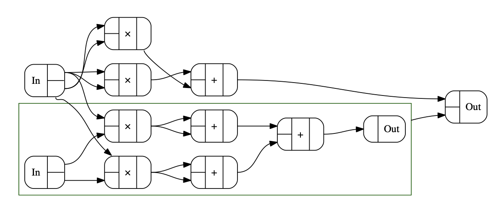
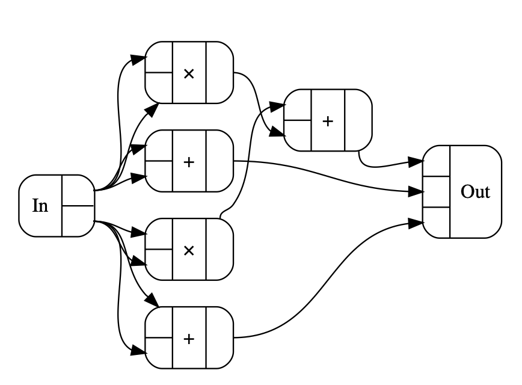

Ist das ein Graph oder kann das weg? Funktionales Deep Learning in Haskell
Raoul Schlotterbeck
Created: 2023-03-14 Tue 10:10
"As so often, I find that talks that I'm giving are basically explaining what Conal Elliot and Ed Kmett have done several years ago."
ANOMALY-APP
Neuronale Netze sind doch nur Funktionen
Deep Learning Community: Hold my beer
"… layers (die im modernen maschinellen Lernen als zustandsbehaftete Funktionen mit impliziten Parametern verstanden werden sollten) werden typischerweise als Python-Klassen dargestellt, deren Konstruktoren ihre Parameter erzeugen und initialisieren…"
Übersetzt aus: https://proceedings.neurips.cc/paper/2019/file/bdbca288fee7f92f2bfa9f7012727740-Paper.pdf
Training
- Finde Parameter, für die das NN auf einem gegebenen Trainingsdatensatz möglichst gute Ergebnisse liefert
Was gut ist, wird von einer skalarwertigen Fehlerfunktion beurteilt
\(\Rightarrow\) Löse Optimierungsproblem:
\(\textrm{argmin}_{\omega \in \Omega} (\textrm{loss} \circ \textrm{neuralNet} (\omega; \textrm{data}))\)
Gradient Descent
\(w' = w - \alpha * \frac {\partial f}{\partial w}\)

http://citadel.sjfc.edu/faculty/kgreen/vector/Block2/pder/node8.html , https://upload.wikimedia.org/wikipedia/commons/a/a3/Gradient_descent.gif
Automatic Differentiation
\(nn = l_L \circ ... \circ l_1\)
\(\Rightarrow\) Ableitung ist: \(Dnn = Dl_L \circ ... \circ Dl_1\)
- Funktionskomposition ist assoziativ, d.h. wir können in bliebiger Reihenfolge auswerten
- Aufwand "vorwärts" abhängig von Eingangsdimension (hier: Anzahl der Parameter, heute bis \(10^{12}\))
- Aufwand "rückwärts" abhängig von Ausgangsdimension (hier: 1)
Reverse Automatic Differentiation
\(Dnn(v) = Dl_L(l_{L-1}(...)) \circ ... \circ Dl_1(v)\)
Um \(Dl_i\) zu berechnen, müssen wir die Ausgabe von \(l_{i - 1}\) kennen
\(\Rightarrow\) "Wengert-Liste"
Deep Learning Bibliotheken sind im Wesentlichen Werkzeuge zur Generierung und Verwaltung von Berechnungsgraphen.
TensorFlow Graphen
Implementierung in TensorFlow
class SimpleNN: def __init__(self, dim): self.dims = [dim, dim, dim // 2, dim // 2, dim] self.weights = [] self.biases = [] for i in range(4): self.weights.append( tf.Variable(tf.random.normal(shape=(self.dims[i+1],self.dims[i]))) ) self.biases.append( tf.Variable(tf.random.normal(shape=(self.dims[i+1],1))) ) def __call__(self, x): inputs = tf.convert_to_tensor([x], dtype=tf.float32) out = tf.matmul(self.weights[0], inputs, transpose_b=True) + self.biases[0] out = tf.tanh(out) out = tf.matmul(self.weights[1], out) + self.biases[1] out = tf.nn.relu(out) out = tf.matmul(self.weights[2], out) + self.biases[2] out = tf.tanh(out) return tf.matmul(self.weights[3], out) + self.biases[3]
Neuronale Netze mit ConCat
ConCat Funktionsweise
- Nutzt Isomorphie zwischen Lambda-Kalkülen und kartesisch abgeschlossenen Kategorien (CCC)
- Übersetzt Haskell-Core in kategorielle Sprache
- Ausdrücke in kategorieller Sprache können in beliebigen CCCs interpretiert werden
- Abstrahiert dadurch Haskells Funktionspfeil
(->)
Beispiel einer Transformation
magSqr :: Num a => (a, a) -> a magSqr (a, b) = sqr a + sqr b
\(\Rightarrow\) ConCat:
\(magSqr =\) \(addC\) \(\circ (mulC \circ (exl \triangle exl) \triangle mulC \circ (exr \triangle exr))\)
In Kategorie der Graphen - (a, a) `Graph` a:
Generalized Derivatives
Idee: ergänze Funktionen um ihre Ableitung
\(a \mapsto f(a) \Rightarrow a \mapsto (f(a), f'(a))\)
Kategorie der Generalisierten Ableitungen:
newtype GD k a b = D {unD :: a -> b :* (a `k` b)}
Komposition für Generalized Derivatives
\(a \mapsto (f(a), f'(a))\)
instance Category k => Category (GD k) where ... D g . D f = D (\ a -> let (b, f') = f a (c, g') = g b in (c, g' . f') )
Kettenregel: \((g \circ f)'(x) = g'(f(x)) \circ f'(x)\)
Multiplikation für Generalized Derivatives
\(a \mapsto (f(a), f'(a))\)
instance (LinearCat k s, Additive s, Num s) => NumCat (GD k) s where ... mulC = D (mulC &&& \ (u,v) -> scale v |||| scale u)
Produktregel: \((f(x) \cdot g(x))' = f'(x) \cdot g(x) + f(x) \cdot g'(x)\)
Forward Automatic Differentiation

Figure 1: magSqr in GD (-+>)
Duale Kategorien
Im Dual einer Kategorie drehen sich alle Pfeile um
\(a \rightarrow b \Rightarrow b \rightarrow a\)
In Haskell:
newtype Dual k a b = Dual (b `k` a)
Beispiele Dualer Morphismen
instance Category k => Category (Dual k) where ... -- flip :: (a -> b -> c) -> b -> a -> c (.) = inAbst2 (flip (.)) instance CoproductPCat k => ProductCat (Dual k) where ... -- exl :: (a, b) -> a; inlP :: a -> (a, b) exl = abst inlP
Reverse Automatic Differentiation

Figure 2: magSqr in GD (Dual(-+>))
Graphenfreie Gradienten
type RAD = GD (Dual (-+>)) grad :: Num s => (a -> s) -> (a -> a) grad = friemelOutGrad . toCcc @RAD nnGrad :: parameters -> parameters nnGrad = grad (loss . nn)
Beschleunigtes Deep Learning in Haskell mit Accelerate
"Data.Array.Accelerate defines an embedded array language for computations for high-performance computing in Haskell. … These computations may then be online compiled and executed on a range of architectures."
Kategorie der Accelerate-Funktionen:
newtype AccFun a b where AccFun :: (AccValue a -> AccValue b) -> AccFun a b
ConCelerate: ConCat + Accelerate
simpleNN :: (SimpleNNConstraints f n m num) => SimpleNN f n m num simpleNN = affine @. affTanh @. affRelu @. affTanh simpleNNGrad :: (KnownNat m, KnownNat n) => (Vector n Double, Vector n Double) -> SimpleNNParameters n m Double -> SimpleNNParameters n m Double simpleNNGrad = errGrad simpleNN simpleNNGradAccFun :: (KnownNat m, KnownNat n) => (Vector n Double, Vector n Double) -> SimpleNNParameters n m Double `AccFun` SimpleNNParameters n m Double simpleNNGradAccFun pair = toCcc (simpleNNGrad pair)